#10077 Romance & Cigarettes
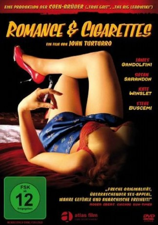 
 IMDB-Wertung: 6.3 / 10
IMDB-Wertung: 6.3 / 10  Metascore: 55
Metascore: 55 
Eisenflechter Nick ist einfacher Arbeiter aus der New Yorker Vorstadt, verheiratet mit der schönen Schneiderin Kitty, und gesegnet mit drei erwachsenen Töchtern. Die Liebe aber scheint erkaltet, und so wendet sich Nick den Bordsteinschwalben zu. Eine hat es ihm besonders angetan, ein Rotschopf wie seine Frau, der ihn mit Obszönitäten im Cockney-Slang scharf macht. Nick ist hin und hergerissen, denn irgendwie mag er seine Frau immer noch. Aber kann diese ihm seine jüngsten Eskapaden je verzeihen? Die Töchter und Freunde haben ihre Zweifel...
Jahr: 2005
Dauer: 101 Minuten
FSK: 12
Land: USA Studio: BoroturroTonspuren: DTS - ,
Untertitel: Deutsch,
Auflösung: 1080p (1920x824) Größe: 8949 MB
Genre: Komödie, Liebe, Musical
Regisseur:  John Turturro
John Turturro
Drehbuch: John Turturro
Soundtrack:
Darsteller:
 James Gandolfini als Nick Murder
James Gandolfini als Nick Murder Susan Sarandon als Kitty Kane
Susan Sarandon als Kitty Kane Kate Winslet als Tula
Kate Winslet als Tula Steve Buscemi als Angelo
Steve Buscemi als Angelo Bobby Cannavale als Fryburg
Bobby Cannavale als Fryburg- 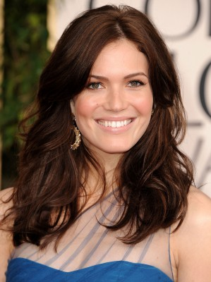 Mandy Moore als Baby
 Mary-Louise Parker als Constance
Mary-Louise Parker als Constance- Aida Turturro als Rosebud
 Christopher Walken als Cousin Bo
Christopher Walken als Cousin Bo- 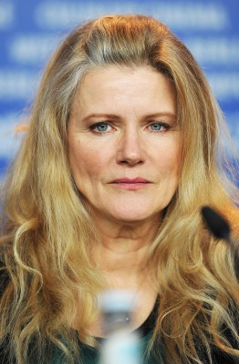 Barbara Sukowa als Gracie
- 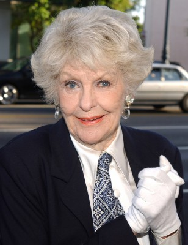 Elaine Stritch als Nick's Mother
 Eddie Izzard als Gene Vincent
Eddie Izzard als Gene Vincent Amy Sedaris als Frances
Amy Sedaris als Frances- 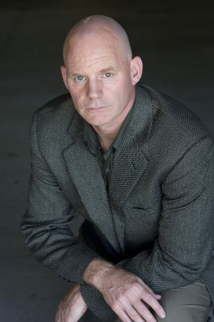 P.J. Brown als Police Officer
- 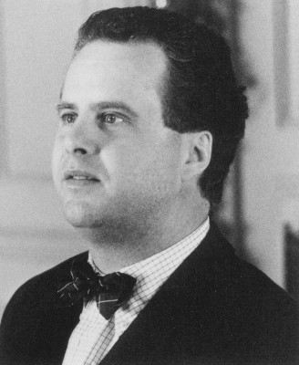 Adam LeFevre als Fruitman
- Cady Huffman als Female Dancer & Singer
- 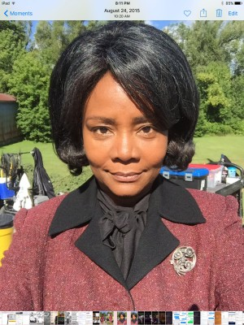 Tonya Pinkins als Female Medic
- 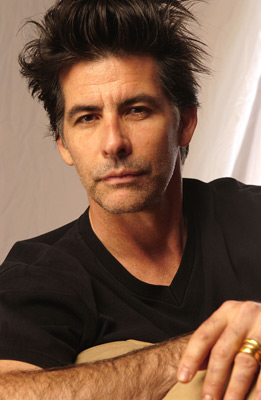 David Thornton als Urologist
 Kumar Pallana als Kumar
Kumar Pallana als Kumar- Jake Cannavale als Fryburg Friend
- 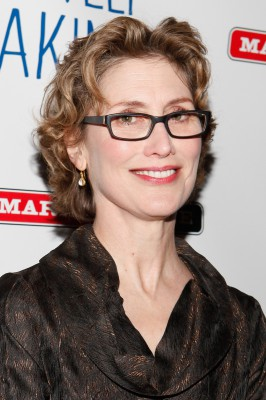 Katherine Borowitz als Choir Lady / Singer
- Tricia Brouk als Female Dancer & Singer
- 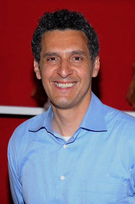 John Turturro als Male Dancer & Singer
- Dared Wright als Male Dancer & Singer
- Tom Bruno als Fireman
 Craig Castaldo als Slick Haired Man (uncredited)
Craig Castaldo als Slick Haired Man (uncredited)- 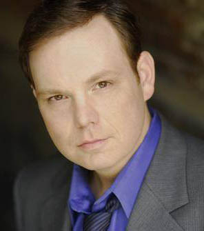 Michael Devine als Police Officer #2 (uncredited)
- Ivan Fatovic als Priest (uncredited)
- Tony Goldwyn als Kitty's First Love (uncredited)
- June Stein als Frances' Mother
- Michael McElroy als Ten Commandments Priest
- Joseph Longo als Altar Boy
- Devon McRimmon als Altar Boy
- Amedeo Turturro als Fryburg Friend
- Ryan Webb als Fryburg Friend
- Diego Z. Turturro als Boy on Tricycle
- Yianni Digaletos als The Greek
- Alexandra Beller als Female Dancer & Singer
- Mary Bond Davis als Female Dancer & Singer
- LaRita Gaskins als Female Dancer & Singer
- Karen Graham als Female Dancer & Singer
- Kelly Robertson als Female Dancer & Singer
- Daria Hardeman als Female Dancer & Singer
- Lisa Tachick Hooper als Female Dancer & Singer
- Wanda L. Houston als Female Dancer & Singer
- Kate Johnson als Female Dancer & Singer
- Rosalynde LeBlanc als Female Dancer & Singer
- Adele Meyers als Female Dancer & Singer
- Rosetta Mallardi als Female Dancer & Singer
- Emily Molnar als Female Dancer & Singer
Datei: X:\2005(N-Z)\Romance & Cigarettes (2005, FSK12, 1920x824).mkv seit 27.11.2018
Festplatte: HD 2005(G-Z)-2006(A-Z)
 Es gibt insgesamt 50 Filme in der Gruppe '2005(N-Z)'
Es gibt insgesamt 50 Filme in der Gruppe '2005(N-Z)'